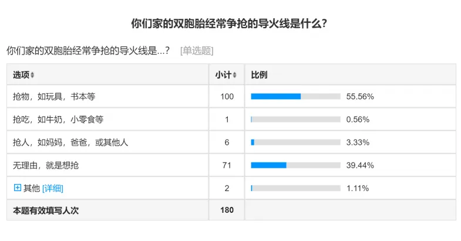

孖仔帮
公众号ID：twinsbang
关注
文|圆圈妈妈
网图|侵删
上周，我们号发起了一个线上调查：你认为，导致双胞胎经常争抢的导火线是什么？结果出来了。

果不其然是抢物：如玩具，书本等
美国亲职教练、作家玛克罕（Laura Markham）从手足互动的研究发现：3～7岁小孩抢玩具（一方抢走，另一方再抢回来）的频率，平均一小时会发生3.5次，2～4岁年段的幼儿发生这类争吵的频率更高，平均每10分钟就发生1次。
平均每10分钟就发生1次抢玩具的事件，这对双胞胎父母来说，是什么概念呢？
意味着，你有9分钟的时间去思考，当双胞胎来找你评理时，如何把这碗水端平；剩下1分钟，是喘气用的！
很显然，这太拿命了，不现实。
难道就任由两个熊孩子就这样为所欲为，肆意践踏尔等残存的理智和母爱？
当然不！
任何时候，都要相信：你若盛开，清风自来。
经过这7年多来与圆圈兄弟的N次方斡旋，我总结了一些战术，针对不同年龄段，以抢玩具车为例。
人物：双胞胎圆圈兄弟
导火线：玩具车1辆
背景：圆圆先拿到了玩具车，圈圈也想要
0-2岁：及时干预 小事化了
废话不多说了，随手拿一个类似的玩具车给圈圈，如果他不愿意，偏要圆圆手上的那个，那就连哄带骗把他抱走，离开是非之地，转移注意力。
理由：这个时候的他们还在口欲期，喜欢动口，一个不高兴就咬你没商量。说不通，骂不得，打也不行，还不如躲得快，及时抱离现场，把两人分开。
2岁前的孩子语言能力不好，生气被抢时表达不出来，只好先咬先打人再说，其实孩子咬人打人只是一个过程，适时引导纠正都是会过去的。
此处有温馨提示：双胞胎2岁前的玩具最好是一式两份，可以有效降低互殴互咬次数，但也不能完全避免，因为在双胞胎孩子们的世界里：你的我想要，我的绝不给你。
懂的都懂，不懂的说明你还是一片净土，此处省略一万字...我只能呵呵！
2岁半-5岁：绝不站队，静观其变
不管谁找我哭诉评理，我都不站队。既不会帮助圆圆，也不会帮助圈圈，由着他们两个自己商量，但我也没闲着，时刻观察着进展。如果看他们商量了半天不仅没结果反而有开战的趋势，那么是时候出来打圆场了：
【圆儿，可以轮着玩吗？】
【圆儿，这个玩具车其实有另外一个玩法，就是你把玩具车咻过去，圈圈把车咻回来，两人一起玩，说不定更有趣啊！你要不要试试看？】
理由：五岁前的他们自制能力仍然较弱，还不懂考虑别人的想法或感受，遇到不如意的事情总是喜欢先动手，若上升为肢体冲突时，家长就要及时现身把两人分开，给与适当的引导，但不要以审判官的身份自居，只需向他们表示明白他们的感受，待双方冷静下来，达成共识后，再给他们来一顿彩虹屁猛夸一番，表扬他们遵守了游戏规则，用心去解决问题。
5岁半以上：鼓励分享，但不强迫
找圆圆，引导他试着分享下，如果圆圆不愿意，我会尝试着诱惑他，告诉他分享可能带来的好处。
【圆儿，圈圈上周是不是跟你分享他的玩具枪？如果你现在也跟他分享这辆玩具车，也许他下次有其他好玩的东西也会第一时间分享给你。这样你岂不是可以玩很多玩具，那样好划算啊！】
说完点到为止，至于他是否会分享，我都尊重他的决定，不会再多说半句，哪怕最后他依然不为所动，我也不会挖苦他，嘲笑他。
理由：孩子在6岁之前还没有他我概念，只会单向思考，缺少分享概念，这是他们的成长节奏，急也急不得，只能耐心引导了。
我认为，分享应该是一种心甘情愿的心情、一种自发性的过程、一种享受共同拥有的快乐，总有一天，等到孩子自己体验到了分享的快乐，会自动自发地乐于分享，根本不用去强迫。
其实，双胞胎手足的每一次冲突，都是一次学习相处互相磨合的过程，若家长置之不理或和稀泥草草了事，只会增加矛盾升级。这正好解释了，为什么双胞胎之间老打架，屡禁不止，用尽了各种办法想阻止孩子们之间的战争，可结果还是战争照旧。
有经验的家长都知道处理这世纪难题只需把握一个原则：绝不站队，静观其变，理性干预，及时引导，鼓励为主，共情辅之...
最后...静待花开。
-END-
微信公众号：孖仔帮
ID : twinsbang
专注双胞胎孕育，养育，教育经验分享
扫码关注我们
点一下你会更好看耶